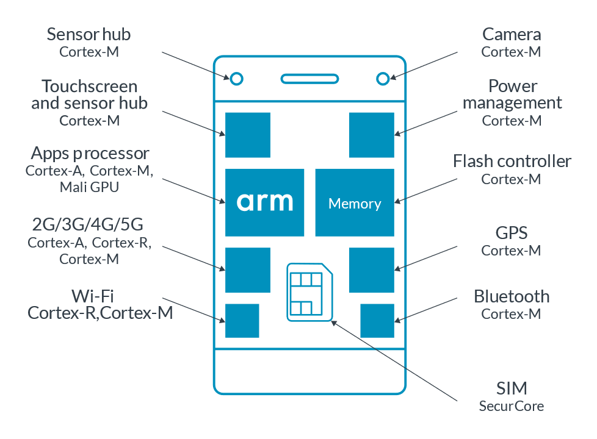
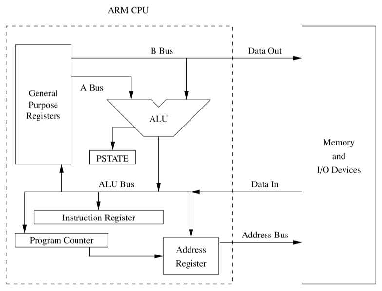

ARM Architecture
ARM's original abbreviation was Acorn RISC Machine.
The cores and instruction sets used by ARM do not correspond one-to-one.
In November 1990, Acorn, Apple and VLSI jointly funded the creation of ARM. Acorn RISC Machine has also been officially renamed Advanced RISC Machine.
After ARM11, ARM processor cores no longer have the ARM prefix. But the word ARM has not disappeared from the Cortex series. The three major series of Cortex, M-R-A, together are ARM.
profiles#
The Arm architecture is one of the most popular processor architectures in the world. Billions of Arm-based devices are shipped every year.
The following table describes the three architecture profiles: A, R, and M:
| A-Profile (Applications) | R-Profile (Real-Time) | M-Profile (Microcontroller) |
|---|---|---|
| High performance | Targeted at systems with real-time requirements | Small, highly power- efficient devices |
| Designed to run a complex operating system, such as Linux or Windows | Commonly found in networking equipment, and embedded control systems | Found at the heart of many IoT devices |
These three profiles allow the Arm architecture to be tailored to the needs of different use cases, while still sharing several base features.
Arm brands
Arm Cortex and Arm Neoverse are the brand names that are used for the Arm processor IP offerings. Our partners offer other processor brands using the Arm architecture.

This example smartphone contains the following processor types:
- An A-profile processor as the main CPU running a rich OS like Android.
- A cellular modem, based on an R-profile processor, provides connectivity.
- Several M-profile processors handle operations like system power management.
- The SIM card uses SecurCore, an M-profile processor with additional security features. SecurCore processors are commonly used in smart cards.
Introduction to the Armv8-M Architecture and its Programmers Model User Guide:
The Armv8 architecture has several different profiles. These profiles are variants of the architecture that target different markets and use cases. The Armv8-M architecture is one of these architecture profiles.
Arm defines three architecture profiles: Application (A), Real-time (R), and Microcontroller (M).
aarch64#
AArch64: AArch64 or ARM64 is the 64-bit extension of the ARM architecture family. It was first introduced with the Armv8-A architecture, and had many extension updates.
Announced in October 2011, ARMv8-A represents a fundamental change to the ARM architecture. It adds an optional 64-bit architecture, named "AArch64", and the associated new "A64" instruction set.
AArch64 provides user-space compatibility with the existing 32-bit architecture ("AArch32" / ARMv7-A), and instruction set ("A32"). The 16-32bit Thumb instruction set is referred to as "T32" and has no 64-bit counterpart.
ARMv8-A allows 32-bit applications to be executed in a 64-bit OS, and a 32-bit OS to be under the control of a 64-bit hypervisor.
aapcs64 - Terms
aapcs64 - 2.2 Terms and abbreviations:
AArch32: The 32-bit general-purpose register width state of the Armv8 architecture, broadly compatible with the Armv7-A architecture.
AArch64: The 64-bit general-purpose register width state of the Armv8 architecture.
ARMv8-A includes the VFPv3/v4 and advanced SIMD (Neon) as standard features in both AArch32 and AArch64. It also adds cryptography instructions supporting AES, SHA-1/SHA-256 and finite field arithmetic.

Naming conventions#
| model | Arch | Spec | ISA | Suffixes |
|---|---|---|---|---|
| 64 + 32 bit | AArch64 | ARMv8-A | A64 + A32 | v8-A |
| 32 + 16 (Thumb) bit | AArch32 | ARMv8-R / ARMv7-A | A32 + T32 | -A32 / -R / v7-A. |
Differences between arm64 and aarch64
Originally there was just the 32-bit architecture, called "ARM".
The ARMv8-A spec introduced a new 64-bit execution state called "AArch64", short for "Arm Architecture 64-bit", which is the official name. The official then retroactively renamed the old 32-bit architecture "AArch32".
"arm64" is an unofficial name some people use because the official name sucks.
It seems that ARM64 was created by Apple and AARCH64 by the others, most notably GNU/GCC guys.
The following commands is excerpted from Arm GNU Toolchain - Downloads:
sudo apt install gcc-arm-none-eabi -y
# arm-linux-gnueabihf-gcc
sudo apt install gcc-arm-linux-gnueabihf -y
# aarch64-linux-gnu-gcc
sudo apt install gcc-aarch64-linux-gnu -y
The following section is taken from the online manual of the GAS:
AArch64 features#
New instruction set, A64:
- Has
31general-purpose 64-bit registers. - Has dedicated zero or stack pointer (
SP) register (depending on instruction). - The program counter (
PC) is no longer directly accessible as a register. -
Instructions are still 32 bits long and mostly the same as A32 (with LDM/STM instructions and most conditional execution dropped).
- Has paired loads/stores (in place of LDM/STM).
- No predication for most instructions (except branches).
-
Most instructions can take 32-bit or 64-bit arguments.
- Addresses assumed to be 64-bit.
Advanced SIMD (Neon) enhanced:
- Has 32 × 128-bit registers (up from 16), also accessible via VFPv4.
- Supports double-precision floating-point format.
- Fully IEEE 754 compliant.
- AES encrypt/decrypt and SHA-1/SHA-2 hashing instructions also use these registers.
A new exception system: Fewer banked registers and modes.
Memory translation from 48-bit virtual addresses based on the existing Large Physical Address Extension (LPAE), which was designed to be easily extended to 64-bit.
Extension: Data gathering hint (ARMv8.0-DGH).
R & M#
AArch64 was introduced in ARMv8-A and is included in subsequent versions of ARMv8-A. It was also introduced in ARMv8-R as an option, after its introduction in ARMv8-A; it is not included in ARMv8-M.
ARM-R (real-time architecture)
Optional AArch64 support was added to the Armv8-R profile, with the first Arm core implementing it being the Cortex-R82. It adds the A64 instruction set, with some changes to the memory barrier instructions.
products#
Apple#
List of Apple's mobile device codes types
iPhone chip list: Here's what A-series chip is in each model - 9to5Mac
List of Apple processors | Apple Wiki | Fandom
- Apple A7 — (2013) introduced in the iPhone 5S, the company's first 64-bit mobile processor. Also used in the 2nd and 3rd generation iPad minis and 1st generation iPad Air.
Raspberry Pi#
Processors - Raspberry Pi Documentation
Raspberry Pi Specifications
| model | Release date | Soc | ISA | CPU |
|---|---|---|---|---|
| RPi 3 Model B | Feb 2016 | BCM2837 | ARMv8-A (64/32-bit) | 4× Cortex-A53 1.2 GHz |
| RPi 4 Model B | Jun 2019/May 2020 | BCM2711 | ARMv8-A (64/32-bit) | 4× Cortex-A72 1.5 GHz or 1.8 GHz |
| RPi 5 | Oct 2023 | BCM2712 | ARMv8.2-A (64/32-bit) | 4× Cortex-A76 2.4 GHz |
- Raspberry Pi 3 Model B / Raspberry Pi 3 Model B+ - datasheet
- Raspberry Pi 4 Model B - Tech Specs, datasheet
- Raspberry Pi 5 - datasheet
ARMv8-A 64-bit milestones:
- Model A (no Ethernet): Nov 2018
- Model B (with Ethernet) series: since RPi 2 Model B v1.2/Oct 2016
- Compute Module series: since Jan 2017
- Zero: RPi Zero 2 W/Nov 2015
- Keyboard: RPi 400/Nov 2020
RPi3 in ARMv8 Mode » Raspberry Pi Geek
ARM Reveals Cortex-A72 Architecture Details
ARM Cortex-A72 MPCore Processor Technical Reference Manual
Cortex-A72 Software Optimization Guide
Arm's Cortex-A76 CPU Unveiled: Taking Aim at the Top for 7nm - Print View
Arm Cortex-A76 Software Optimization Guide
raspberrypi/firmware
raspberrypi/linux
ARM/RaspberryPi - Ubuntu Wiki
a64-isa-guide#
A64 Instruction Set Architecture Guide
- Overview
-
An Instruction Set Architecture (ISA) is part of the abstract model of a computer. It defines how software controls the processor.
-
The Arm ISA allows you to write software and firmware that conforms to the Arm specifications. This mean that, if your software or firmware conforms to the specifications, any Arm-based processor will execute it in the same way.
- Why you should care about the ISA?
-
As developers, you may not need to write directly in assembler in our day-to-day role. However, assembler is still important in some areas, such as the first stage boot software or some low-level kernel activities.
-
Even if you are not writing assembly code directly, understanding what the instruction set can do, and how the compiler makes use of those instructions, can help you to write more efficient code. It can also help you to understand the output of the compiler. This can be useful when debugging.
- Instruction sets in the Arm architecture
-
Armv8-A supports three instruction sets:
A32,T32andA64. -
The
A64instruction set is used when executing in the AArch64 Execution state. It is a fixed-length 32-bit instruction set. The 64 in the name refers to the use of this instruction by the AArch64 Execution state. It does not refer to the size of the instructions in memory. -
The
A32andT32instruction sets are also referred to asArmandThumb, respectively. These instruction sets are used when executing in the AArch32 Execution state.
references#
Arm Community Blogs
ARM vs. Harvard vs. von Neumann
GENERAL: Harvard vs von Neumann Architectures
How to explain the harvard architecture of ARM processor at instruction level?